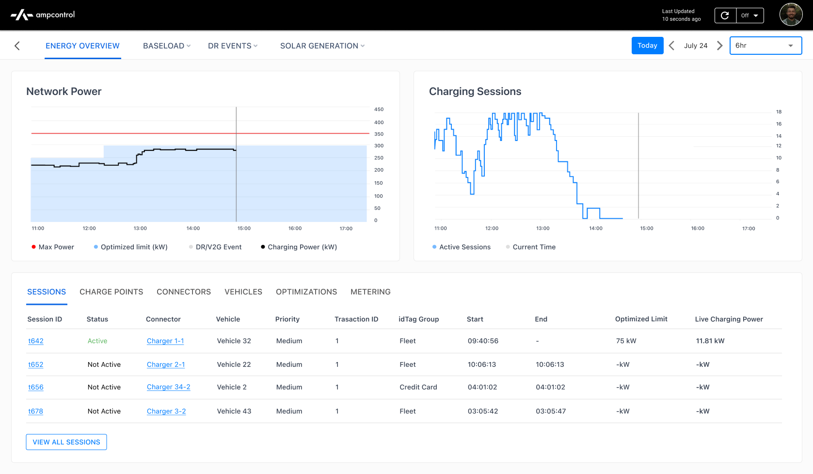

<!-- ============================================================
     AMPCONTROL CASE STUDY — BACKUP
     Removed from index.html on 2026-06-06.
     To restore: paste the project card back into .min-work,
     the work-row back into the postcard .work-list,
     and the <template> block back before the SAGE template.
     ============================================================ -->

<!-- 1. Homepage project card (goes inside .min-work in .min-right) -->
<!--
        <div class="min-project work-row" data-card="card-2">
          <div class="min-project-thumb" style="background-image: url('Chaotic Gradients - 50.jpg');">
            
          </div>
          <div class="min-project-row">
            <span class="min-project-title">Ampcontrol</span>
            <span class="min-project-desc">Operations dashboard for EV charging networks</span>
          </div>
        </div>
-->

<!-- 2. Postcard work-row (goes inside .work-list in the hidden postcard) -->
<!--
                  <div class="work-row" data-card="card-2">
                    
                    <span class="work-name-group"><span class="work-title">Ampcontrol</span><span class="work-year">2024</span></span>
                    <span class="work-role">Product Design</span>
                  </div>
-->

<!-- 3. Full case study template -->
  <template id="ampcontrol-content">
    <div class="cs-wrap">

      <!-- Left scroll-spy nav -->
      <nav class="cs-sidenav" aria-label="Page sections">
        <a class="cs-nav-item" data-target="amp-overview">Overview</a>
        <a class="cs-nav-item" data-target="amp-impact">Impact</a>
        <a class="cs-nav-item" data-target="amp-mission">Mission</a>
        <a class="cs-nav-item" data-target="amp-solutions">Solutions</a>
        <a class="cs-nav-item" data-target="amp-reflections">Reflections</a>
      </nav>

      <!-- Main content -->
      <div class="cs-content">

        <!-- Overview -->
        <div id="amp-overview" class="cs-header">
          
          <div class="cs-header-row">
            <div class="cs-header-left">
              <p class="cs-title">Ampcontrol</p>
              <p class="cs-subtitle" style="color:#000;">Designing an energy management dashboard to track and optimize EV fleet operations.</p>
            </div>
            <div class="cs-header-meta">
              <div class="cs-meta-block">
                <span class="cs-meta-label cs-meta-label--title">Team</span>
                <span class="cs-meta-value">1 Designer (Me)<br>TPM<br>Engineering</span>
              </div>
              <div class="cs-meta-block">
                <span class="cs-meta-label cs-meta-label--title">Timeline</span>
                <span class="cs-meta-value">5 weeks</span>
              </div>
            </div>
          </div>
        </div>

        <!-- Impact -->
        <section id="amp-impact" class="cs-section">
          <span class="cs-label">Impact</span>
          <div class="cs-impact-list">
            <p class="cs-impact-item"><strong>33%</strong> Reduction in charging downtime through improved visibility.</p>
            <p class="cs-impact-item"><strong>40%</strong> Faster hardware issue resolution for ground operators.</p>
            <p class="cs-impact-item"><strong>30%</strong> Increase in customer acquisition.</p>
          </div>
        </section>

        <!-- Section divider -->
        <div class="cs-divider"><span>Mission</span></div>

        <!-- Mission -->
        <section id="amp-mission" class="cs-section">
          <span class="cs-label">The Problem</span>
          <p class="cs-body" style="color:#000;">EV operators could monitor individual site activity but lacked visibility into charging sessions and operational issues across all locations.</p>
          <div class="cs-img-placeholder" style="display:flex; align-items:center; justify-content:center; border:none;">
            <div style="width:85%; border-radius:8px; overflow:hidden;">
              
            </div>
          </div>
          <p class="cs-caption" style="margin-top:0.75rem;">Screenshot of Ampcontrol's original dashboard</p>
        </section>

        <section class="cs-section">
          <span class="cs-label">My Goal</span>
          <p class="cs-body" style="color:#000;">Redesign the landing page to serve as the single source of truth for ground operators, enabling them to oversee operations and manage issues across entire organizations.</p>
        </section>

        <section class="cs-section">
          <span class="cs-label">Research Insights</span>
          <div style="display:flex; gap:3rem; align-items:flex-start; margin-top:1rem;">
            <div style="flex:1;">
              <h3 class="cs-solution-title">User Needs</h3>
              <p class="cs-body" style="color:#000;">Operators need real-time visibility into all their charging sites to manage energy consumption and avoid costly overages. Operators also need to quickly identify and resolve hardware issues to minimize downtime.</p>
            </div>
            <div style="flex:1;">
              <h3 class="cs-solution-title">Business Goals</h3>
              <p class="cs-body" style="color:#000;">Clients wanted a comprehensive asset overview of vehicles and chargers to predict charging trends, optimize operations, and scale efficiently. Ampcontrol recognized these additions would help them stay competitive in a fast-evolving industry.</p>
            </div>
          </div>
        </section>

        <!-- Section divider -->
        <div class="cs-divider"><span>Solutions</span></div>

        <!-- Solutions -->
        <section id="amp-solutions" class="cs-section">
          <div class="cs-solution">
            <span class="cs-label">The full picture at a glance</span>
            <h3 class="cs-solution-title">Overview of Assets</h3>
            <p class="cs-body" style="color:#000;">A map view providing a global overview of an organization's charging networks with zooming and panning capability, alongside a detailed list view showcasing power utilization, asset counts, hardware issues, and more for each network.</p>
            <div class="cs-img-placeholder"></div>
          </div>

          <div class="cs-solution">
            <span class="cs-label">Surfacing what matters most</span>
            <h3 class="cs-solution-title">Sorting Capability</h3>
            <p class="cs-body" style="color:#000;">The ability to sort by issues and alerts relevant to ground operators, so the most critical problems are always front and center.</p>
            <div class="cs-img-placeholder"></div>
          </div>

          <div class="cs-solution">
            <span class="cs-label">Context without clutter</span>
            <h3 class="cs-solution-title">Info &amp; Asset Tags</h3>
            <p class="cs-body" style="color:#000;">To simplify complex data presentation, I utilized icons for clear visual communication and integrated tags in hover and select states for added context. Tags were implemented in the list view and map pop-up modals to provide quick access to vehicle and charger details.</p>
            <div class="cs-img-placeholder"></div>
          </div>

          <div class="cs-solution">
            <span class="cs-label">Issues resolved, not ignored</span>
            <h3 class="cs-solution-title">Alert Queue</h3>
            <p class="cs-body" style="color:#000;">Operators can now use an alert queue to track active hardware issues across all sites, view alerts by location, monitor progress, access details, and route issues to the right teams to keep operations running smoothly.</p>
            <div class="cs-img-placeholder"></div>
          </div>
        </section>

        <!-- Section divider -->
        <div class="cs-divider"><span>Reflections</span></div>

        <!-- Reflections -->
        <section id="amp-reflections" class="cs-section">
          <span class="cs-label">Reflections</span>
          <div class="cs-reflections">
            <div class="cs-reflection">
              <h3 class="cs-reflection-title">Shipping fast, learning faster.</h3>
              <p class="cs-body">This was a high-impact project I took on early at Ampcontrol, where I learned to collaborate cross-functionally, advocate for design quality, and rapidly iterate, test, and ship.</p>
            </div>
            <div class="cs-reflection">
              <h3 class="cs-reflection-title">What I'd explore with more time.</h3>
              <p class="cs-body">With more time, I would have explored deprioritized features like long-term charger health analytics, fleet-wide insights, trip feedback, accident prevention, route previews, and proactive tools like charging queues and scheduled maintenance reminders.</p>
            </div>
            <div class="cs-reflection">
              <h3 class="cs-reflection-title">Measuring what matters long-term.</h3>
              <p class="cs-body">I would have started tracking additional success metrics like dashboard usage frequency, on-time trip departure rate, issue detection and resolution time, and fleet and asset growth rate to further evaluate long-term success.</p>
            </div>
          </div>
        </section>

        <!-- Closing -->
        <section class="cs-section cs-closing">
          <p class="cs-body">This is just a snapshot of the entire design process.<br>Reach out to <span style="font-weight: 500;">mitaelan07@gmail.com</span> for the full story!</p>
        </section>

      </div><!-- /.cs-content -->
    </div><!-- /.cs-wrap -->
  </template>
